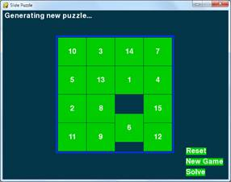
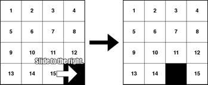
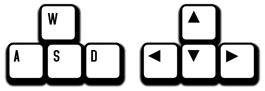
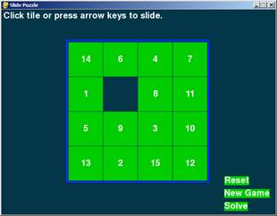
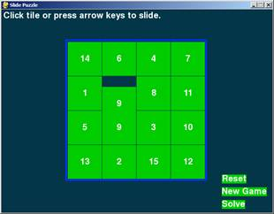

The board is a 4x4 grid with fifteen tiles (numbered 1 through 15 going left to right) and one blank space. The tiles start out in random positions, and the player must slide tiles around until the tiles are back in their original order.
This source code can be downloaded from http://invpy.com/slidepuzzle.py. If you get any error messages, look at the line number that is mentioned in the error message and check your code for any typos. You can also copy and paste your code into the web form at http://invpy.com/diff/slidepuzzle to see if the differences between your code and the code in the book.
1. # Slide Puzzle
2. # By Al Sweigart al@inventwithpython.com
3. # http://inventwithpython.com/pygame
4. # Creative Commons BY-NC-SA 3.0 US
5.
6. import pygame, sys, random
7. from pygame.locals import *
8.
9. # Create the constants (go ahead and experiment with different values)
10. BOARDWIDTH = 4 # number of columns in the board
11. BOARDHEIGHT = 4 # number of rows in the board
12. TILESIZE = 80
13. WINDOWWIDTH = 640
14. WINDOWHEIGHT = 480
15. FPS = 30
16. BLANK = None
17.
18. # R G B
19. BLACK = ( 0, 0, 0)
20. WHITE = (255, 255, 255)
21. BRIGHTBLUE = ( 0, 50, 255)
22. DARKTURQUOISE = ( 3, 54, 73)
23. GREEN = ( 0, 204, 0)
24.
25. BGCOLOR = DARKTURQUOISE
26. TILECOLOR = GREEN
27. TEXTCOLOR = WHITE
28. BORDERCOLOR = BRIGHTBLUE
29. BASICFONTSIZE = 20
30.
31. BUTTONCOLOR = WHITE
32. BUTTONTEXTCOLOR = BLACK
33. MESSAGECOLOR = WHITE
34.
35. XMARGIN = int((WINDOWWIDTH - (TILESIZE * BOARDWIDTH + (BOARDWIDTH - 1))) / 2)
36. YMARGIN = int((WINDOWHEIGHT - (TILESIZE * BOARDHEIGHT + (BOARDHEIGHT - 1))) / 2)
37.
38. UP = 'up'
39. DOWN = 'down'
40. LEFT = 'left'
41. RIGHT = 'right'
42.
43. def main():
44. global FPSCLOCK, DISPLAYSURF, BASICFONT, RESET_SURF, RESET_RECT, NEW_SURF, NEW_RECT, SOLVE_SURF, SOLVE_RECT
45.
46. pygame.init()
47. FPSCLOCK = pygame.time.Clock()
48. DISPLAYSURF = pygame.display.set_mode((WINDOWWIDTH, WINDOWHEIGHT))
49. pygame.display.set_caption('Slide Puzzle')
50. BASICFONT = pygame.font.Font('freesansbold.ttf', BASICFONTSIZE)
51.
52. # Store the option buttons and their rectangles in OPTIONS.
53. RESET_SURF, RESET_RECT = makeText('Reset', TEXTCOLOR, TILECOLOR, WINDOWWIDTH - 120, WINDOWHEIGHT - 90)
54. NEW_SURF, NEW_RECT = makeText('New Game', TEXTCOLOR, TILECOLOR, WINDOWWIDTH - 120, WINDOWHEIGHT - 60)
55. SOLVE_SURF, SOLVE_RECT = makeText('Solve', TEXTCOLOR, TILECOLOR, WINDOWWIDTH - 120, WINDOWHEIGHT - 30)
56.
57. mainBoard, solutionSeq = generateNewPuzzle(80)
58. SOLVEDBOARD = getStartingBoard() # a solved board is the same as the board in a start state.
59. allMoves = [] # list of moves made from the solved configuration
60.
61. while True: # main game loop
62. slideTo = None # the direction, if any, a tile should slide
63. msg = '' # contains the message to show in the upper left corner.
64. if mainBoard == SOLVEDBOARD:
65. msg = 'Solved!'
66.
67. drawBoard(mainBoard, msg)
68.
69. checkForQuit()
70. for event in pygame.event.get(): # event handling loop
71. if event.type == MOUSEBUTTONUP:
72. spotx, spoty = getSpotClicked(mainBoard, event.pos[0], event.pos[1])
73.
74. if (spotx, spoty) == (None, None):
75. # check if the user clicked on an option button
76. if RESET_RECT.collidepoint(event.pos):
77. resetAnimation(mainBoard, allMoves) # clicked on Reset button
78. allMoves = []
79. elif NEW_RECT.collidepoint(event.pos):
80. mainBoard, solutionSeq = generateNewPuzzle(80) # clicked on New Game button
81. allMoves = []
82. elif SOLVE_RECT.collidepoint(event.pos):
83. resetAnimation(mainBoard, solutionSeq + allMoves) # clicked on Solve button
84. allMoves = []
85. else:
86. # check if the clicked tile was next to the blank spot
87.
88. blankx, blanky = getBlankPosition(mainBoard)
89. if spotx == blankx + 1 and spoty == blanky:
90. slideTo = LEFT
91. elif spotx == blankx - 1 and spoty == blanky:
92. slideTo = RIGHT
93. elif spotx == blankx and spoty == blanky + 1:
94. slideTo = UP
95. elif spotx == blankx and spoty == blanky - 1:
96. slideTo = DOWN
97.
98. elif event.type == KEYUP:
99. # check if the user pressed a key to slide a tile
100. if event.key in (K_LEFT, K_a) and isValidMove(mainBoard, LEFT):
101. slideTo = LEFT
102. elif event.key in (K_RIGHT, K_d) and isValidMove(mainBoard, RIGHT):
103. slideTo = RIGHT
104. elif event.key in (K_UP, K_w) and isValidMove(mainBoard, UP):
105. slideTo = UP
106. elif event.key in (K_DOWN, K_s) and isValidMove(mainBoard, DOWN):
107. slideTo = DOWN
108.
109. if slideTo:
110. slideAnimation(mainBoard, slideTo, 'Click tile or press arrow keys to slide.', 8) # show slide on screen
111. makeMove(mainBoard, slideTo)
112. allMoves.append(slideTo) # record the slide
113. pygame.display.update()
114. FPSCLOCK.tick(FPS)
115.
116.
117. def terminate():
118. pygame.quit()
119. sys.exit()
120.
121.
122. def checkForQuit():
123. for event in pygame.event.get(QUIT): # get all the QUIT events
124. terminate() # terminate if any QUIT events are present
125. for event in pygame.event.get(KEYUP): # get all the KEYUP events
126. if event.key == K_ESCAPE:
127. terminate() # terminate if the KEYUP event was for the Esc key
128. pygame.event.post(event) # put the other KEYUP event objects back
129.
130.
131. def getStartingBoard():
132. # Return a board data structure with tiles in the solved state.
133. # For example, if BOARDWIDTH and BOARDHEIGHT are both 3, this function
134. # returns [[1, 4, 7], [2, 5, 8], [3, 6, None]]
135. counter = 1
136. board = []
137. for x in range(BOARDWIDTH):
138. column = []
139. for y in range(BOARDHEIGHT):
140. column.append(counter)
141. counter += BOARDWIDTH
142. board.append(column)
143. counter -= BOARDWIDTH * (BOARDHEIGHT - 1) + BOARDWIDTH - 1
144.
145. board[BOARDWIDTH-1][BOARDHEIGHT-1] = None
146. return board
147.
148.
149. def getBlankPosition(board):
150. # Return the x and y of board coordinates of the blank space.
151. for x in range(BOARDWIDTH):
152. for y in range(BOARDHEIGHT):
153. if board[x][y] == None:
154. return (x, y)
155.
156.
157. def makeMove(board, move):
158. # This function does not check if the move is valid.
159. blankx, blanky = getBlankPosition(board)
160.
161. if move == UP:
162. board[blankx][blanky], board[blankx][blanky + 1] = board[blankx][blanky + 1], board[blankx][blanky]
163. elif move == DOWN:
164. board[blankx][blanky], board[blankx][blanky - 1] = board[blankx][blanky - 1], board[blankx][blanky]
165. elif move == LEFT:
166. board[blankx][blanky], board[blankx + 1][blanky] = board[blankx + 1][blanky], board[blankx][blanky]
167. elif move == RIGHT:
168. board[blankx][blanky], board[blankx - 1][blanky] = board[blankx - 1][blanky], board[blankx][blanky]
169.
170.
171. def isValidMove(board, move):
172. blankx, blanky = getBlankPosition(board)
173. return (move == UP and blanky != len(board[0]) - 1) or \
174. (move == DOWN and blanky != 0) or \
175. (move == LEFT and blankx != len(board) - 1) or \
176. (move == RIGHT and blankx != 0)
177.
178.
179. def getRandomMove(board, lastMove=None):
180. # start with a full list of all four moves
181. validMoves = [UP, DOWN, LEFT, RIGHT]
182.
183. # remove moves from the list as they are disqualified
184. if lastMove == UP or not isValidMove(board, DOWN):
185. validMoves.remove(DOWN)
186. if lastMove == DOWN or not isValidMove(board, UP):
187. validMoves.remove(UP)
188. if lastMove == LEFT or not isValidMove(board, RIGHT):
189. validMoves.remove(RIGHT)
190. if lastMove == RIGHT or not isValidMove(board, LEFT):
191. validMoves.remove(LEFT)
192.
193. # return a random move from the list of remaining moves
194. return random.choice(validMoves)
195.
196.
197. def getLeftTopOfTile(tileX, tileY):
198. left = XMARGIN + (tileX * TILESIZE) + (tileX - 1)
199. top = YMARGIN + (tileY * TILESIZE) + (tileY - 1)
200. return (left, top)
201.
202.
203. def getSpotClicked(board, x, y):
204. # from the x & y pixel coordinates, get the x & y board coordinates
205. for tileX in range(len(board)):
206. for tileY in range(len(board[0])):
207. left, top = getLeftTopOfTile(tileX, tileY)
208. tileRect = pygame.Rect(left, top, TILESIZE, TILESIZE)
209. if tileRect.collidepoint(x, y):
210. return (tileX, tileY)
211. return (None, None)
212.
213.
214. def drawTile(tilex, tiley, number, adjx=0, adjy=0):
215. # draw a tile at board coordinates tilex and tiley, optionally a few
216. # pixels over (determined by adjx and adjy)
217. left, top = getLeftTopOfTile(tilex, tiley)
218. pygame.draw.rect(DISPLAYSURF, TILECOLOR, (left + adjx, top + adjy, TILESIZE, TILESIZE))
219. textSurf = BASICFONT.render(str(number), True, TEXTCOLOR)
220. textRect = textSurf.get_rect()
221. textRect.center = left + int(TILESIZE / 2) + adjx, top + int(TILESIZE / 2) + adjy
222. DISPLAYSURF.blit(textSurf, textRect)
223.
224.
225. def makeText(text, color, bgcolor, top, left):
226. # create the Surface and Rect objects for some text.
227. textSurf = BASICFONT.render(text, True, color, bgcolor)
228. textRect = textSurf.get_rect()
229. textRect.topleft = (top, left)
230. return (textSurf, textRect)
231.
232.
233. def drawBoard(board, message):
234. DISPLAYSURF.fill(BGCOLOR)
235. if message:
236. textSurf, textRect = makeText(message, MESSAGECOLOR, BGCOLOR, 5, 5)
237. DISPLAYSURF.blit(textSurf, textRect)
238.
239. for tilex in range(len(board)):
240. for tiley in range(len(board[0])):
241. if board[tilex][tiley]:
242. drawTile(tilex, tiley, board[tilex][tiley])
243.
244. left, top = getLeftTopOfTile(0, 0)
245. width = BOARDWIDTH * TILESIZE
246. height = BOARDHEIGHT * TILESIZE
247. pygame.draw.rect(DISPLAYSURF, BORDERCOLOR, (left - 5, top - 5, width + 11, height + 11), 4)
248.
249. DISPLAYSURF.blit(RESET_SURF, RESET_RECT)
250. DISPLAYSURF.blit(NEW_SURF, NEW_RECT)
251. DISPLAYSURF.blit(SOLVE_SURF, SOLVE_RECT)
252.
253.
254. def slideAnimation(board, direction, message, animationSpeed):
255. # Note: This function does not check if the move is valid.
256.
257. blankx, blanky = getBlankPosition(board)
258. if direction == UP:
259. movex = blankx
260. movey = blanky + 1
261. elif direction == DOWN:
262. movex = blankx
263. movey = blanky - 1
264. elif direction == LEFT:
265. movex = blankx + 1
266. movey = blanky
267. elif direction == RIGHT:
268. movex = blankx - 1
269. movey = blanky
270.
271. # prepare the base surface
272. drawBoard(board, message)
273. baseSurf = DISPLAYSURF.copy()
274. # draw a blank space over the moving tile on the baseSurf Surface.
275. moveLeft, moveTop = getLeftTopOfTile(movex, movey)
276. pygame.draw.rect(baseSurf, BGCOLOR, (moveLeft, moveTop, TILESIZE, TILESIZE))
277.
278. for i in range(0, TILESIZE, animationSpeed):
279. # animate the tile sliding over
280. checkForQuit()
281. DISPLAYSURF.blit(baseSurf, (0, 0))
282. if direction == UP:
283. drawTile(movex, movey, board[movex][movey], 0, -i)
284. if direction == DOWN:
285. drawTile(movex, movey, board[movex][movey], 0, i)
286. if direction == LEFT:
287. drawTile(movex, movey, board[movex][movey], -i, 0)
288. if direction == RIGHT:
289. drawTile(movex, movey, board[movex][movey], i, 0)
290.
291. pygame.display.update()
292. FPSCLOCK.tick(FPS)
293.
294.
295. def generateNewPuzzle(numSlides):
296. # From a starting configuration, make numSlides number of moves (and
297. # animate these moves).
298. sequence = []
299. board = getStartingBoard()
300. drawBoard(board, '')
301. pygame.display.update()
302. pygame.time.wait(500) # pause 500 milliseconds for effect
303. lastMove = None
304. for i in range(numSlides):
305. move = getRandomMove(board, lastMove)
306. slideAnimation(board, move, 'Generating new puzzle...', int(TILESIZE / 3))
307. makeMove(board, move)
308. sequence.append(move)
309. lastMove = move
310. return (board, sequence)
311.
312.
313. def resetAnimation(board, allMoves):
314. # make all of the moves in allMoves in reverse.
315. revAllMoves = allMoves[:] # gets a copy of the list
316. revAllMoves.reverse()
317.
318. for move in revAllMoves:
319. if move == UP:
320. oppositeMove = DOWN
321. elif move == DOWN:
322. oppositeMove = UP
323. elif move == RIGHT:
324. oppositeMove = LEFT
325. elif move == LEFT:
326. oppositeMove = RIGHT
327. slideAnimation(board, oppositeMove, '', int(TILESIZE / 2))
328. makeMove(board, oppositeMove)
329.
330.
331. if __name__ == '__main__':
332. main()
Much of the code in Wormy is similar to the previous games we’ve looked at, especially the constants being set at the start of the code.
1. # Slide Puzzle
2. # By Al Sweigart al@inventwithpython.com
3. # http://inventwithpython.com/pygame
4. # Creative Commons BY-NC-SA 3.0 US
5.
6. import pygame, sys, random
7. from pygame.locals import *
8.
9. # Create the constants (go ahead and experiment with different values)
10. BOARDWIDTH = 4 # number of columns in the board
11. BOARDHEIGHT = 4 # number of rows in the board
12. TILESIZE = 80
13. WINDOWWIDTH = 640
14. WINDOWHEIGHT = 480
15. FPS = 30
16. BLANK = None
17.
18. # R G B
19. BLACK = ( 0, 0, 0)
20. WHITE = (255, 255, 255)
21. BRIGHTBLUE = ( 0, 50, 255)
22. DARKTURQUOISE = ( 3, 54, 73)
23. GREEN = ( 0, 204, 0)
24.
25. BGCOLOR = DARKTURQUOISE
26. TILECOLOR = GREEN
27. TEXTCOLOR = WHITE
28. BORDERCOLOR = BRIGHTBLUE
29. BASICFONTSIZE = 20
30.
31. BUTTONCOLOR = WHITE
32. BUTTONTEXTCOLOR = BLACK
33. MESSAGECOLOR = WHITE
34.
35. XMARGIN = int((WINDOWWIDTH - (TILESIZE * BOARDWIDTH + (BOARDWIDTH - 1))) / 2)
36. YMARGIN = int((WINDOWHEIGHT - (TILESIZE * BOARDHEIGHT + (BOARDHEIGHT - 1))) / 2)
37.
38. UP = 'up'
39. DOWN = 'down'
40. LEFT = 'left'
41. RIGHT = 'right'
This code at the top of the program just handles all the basic importing of modules and creating constants. This is just like the beginning of the Memory Puzzle game from the last chapter.
43. def main():
44. global FPSCLOCK, DISPLAYSURF, BASICFONT, RESET_SURF, RESET_RECT, NEW_SURF, NEW_RECT, SOLVE_SURF, SOLVE_RECT
45.
46. pygame.init()
47. FPSCLOCK = pygame.time.Clock()
48. DISPLAYSURF = pygame.display.set_mode((WINDOWWIDTH, WINDOWHEIGHT))
49. pygame.display.set_caption('Slide Puzzle')
50. BASICFONT = pygame.font.Font('freesansbold.ttf', BASICFONTSIZE)
51.
52. # Store the option buttons and their rectangles in OPTIONS.
53. RESET_SURF, RESET_RECT = makeText('Reset', TEXTCOLOR, TILECOLOR, WINDOWWIDTH - 120, WINDOWHEIGHT - 90)
54. NEW_SURF, NEW_RECT = makeText('New Game', TEXTCOLOR, TILECOLOR, WINDOWWIDTH - 120, WINDOWHEIGHT - 60)
55. SOLVE_SURF, SOLVE_RECT = makeText('Solve', TEXTCOLOR, TILECOLOR, WINDOWWIDTH - 120, WINDOWHEIGHT - 30)
56.
57. mainBoard, solutionSeq = generateNewPuzzle(80)
58. SOLVEDBOARD = getStartingBoard() # a solved board is the same as the board in a start state.
Just like in the last chapter, the functions called from the main() function calls will be explained later in the chapter. For now, you just need to know what they do and what values they return. You don’t need to know how they work.
The first part of the main() function will handle creating the window, Clock object, and Font object. The makeText() function is defined later in the program, but for now you just need to know that it returns a pygame.Surface object and pygame.Rect object which can be used to make clickable buttons. The Slide Puzzle game will have three buttons: a “Reset” button that will undo any moves the player has made, a “New” button that will create a new slide puzzle, and a “Solve” button that will solve the puzzle for the player.
We will need to have two board data structures for this program. One board will represent the current game state. The other board will have its tiles in the “solved” state, meaning that all the tiles are lined up in order. When the current game state’s board is exactly the same as the solved board, then we know the player has won. (We won’t ever change this second one. It’ll just be there to compare the current game state board to.)
The generateNewPuzzle() will create a board data structure that started off in the ordered, solved state and then had 80 random slide moves performed on it (because we passed the integer 80 to it. If we want the board to be even more jumbled, then we can pass a larger integer to it). This will make the board into a randomly jumbled state that the player will have to solve (which will be stored in a variable named mainBoard). The generateNewBoard() also returns a list of all the random moves that were performed on it (which will be stored in a variable named solutionSeq).
59. allMoves = [] # list of moves made from the solved configuration
Solving a slide puzzle can be really tricky. We could program the computer to do it, but that would require us to figure out an algorithm that can solve the slide puzzle. That would be very difficult and involve a lot of cleverness and effort to put into this program.
Fortunately, there’s an easier way. We could just have the computer memorize all the random slides it made when it created the board data structure, and then the board can be solved just by performing the opposite slide. Since the board originally started in the solved state, undoing all the slides would return it to the solved state.
For example, below we perform a “right” slide on the board on the left side of the page, which leaves the board in the state that is on the right side of the page:

After the right slide, if we do the opposite slide (a left slide) then the board will be back in the original state. So to get back to the original state after several slides, we just have to do the opposite slides in reverse order. If we did a right slide, then another right slide, then a down slide, we would have to do an up slide, left slide, and left slide to undo those first three slides. This is much easier than writing a function that can solve these puzzles simply by looking at the current state of them.
61. while True: # main game loop
62. slideTo = None # the direction, if any, a tile should slide
63. msg = '' # contains the message to show in the upper left corner.
64. if mainBoard == SOLVEDBOARD:
65. msg = 'Solved!'
66.
67. drawBoard(mainBoard, msg)
In the main game loop, the slideTo variable will track which direction the player wants to slide a tile (it starts off at the beginning of the game loop as None and is set later) and the msg variable tracks what string to display at the top of the window. The program does a quick check on line 64 to see if the board data structure has the same value as the solved board data structure stored in SOLVEDBOARD. If so, then the msg variable is changed to the string 'Solved!'. This won’t appear on the screen until drawBoard() has been called to draw it to the DISPLAYSURF Surface object (which is done on line 67) and pygame.display.update() is called to draw the display Surface object on the actual computer screen (which is done on line 291 at the end of the game loop).
69. checkForQuit()
70. for event in pygame.event.get(): # event handling loop
71. if event.type == MOUSEBUTTONUP:
72. spotx, spoty = getSpotClicked(mainBoard, event.pos[0], event.pos[1])
73.
74. if (spotx, spoty) == (None, None):
75. # check if the user clicked on an option button
76. if RESET_RECT.collidepoint(event.pos):
77. resetAnimation(mainBoard, allMoves) # clicked on Reset button
78. allMoves = []
79. elif NEW_RECT.collidepoint(event.pos):
80. mainBoard, solutionSeq = generateNewPuzzle(80) # clicked on New Game button
81. allMoves = []
82. elif SOLVE_RECT.collidepoint(event.pos):
83. resetAnimation(mainBoard, solutionSeq + allMoves) # clicked on Solve button
84. allMoves = []
Before going into the event loop, the program calls checkForQuit() on line 69 to see if any QUIT events have been created (and terminates the program if there have). Why we have a separate function (the checkForQuit() function) for handling the QUIT events will be explained later. The for loop on line 70 executes the event handling code for any other event created since the last time pygame.event.get() was called (or since the program started, if pygame.event.get() has never been called before).
If the type of event was a MOUSEBUTTONUP event (that is, the player had released a mouse button somewhere over the window), then we pass the mouse coordinates to our getSpotClicked() function which will return the board coordinates of the spot on the board the mouse release happened. The event.pos[0] is the X coordinate and event.pos[1] is the Y coordinate.
If the mouse button release did not happen over one of the spaces on the board (but obviously still happened somewhere on the window, since a MOUSEBUTTONUP event was created), then getSpotClicked() will return None. If this is the case, we want to do an additional check to see if the player might have clicked on the Reset, New, or Solve buttons (which are not located on the board).
The coordinates of where these buttons are on the window are stored in the pygame.Rect objects that are stored in the RESET_RECT, NEW_RECT, and SOLVE_RECT variables. We can pass the mouse coordinates from the Event object to the collidepoint() method. This method will return True if the mouse coordinates are within the Rect object’s area and False otherwise.
85. else:
86. # check if the clicked tile was next to the blank spot
87.
88. blankx, blanky = getBlankPosition(mainBoard)
89. if spotx == blankx + 1 and spoty == blanky:
90. slideTo = LEFT
91. elif spotx == blankx - 1 and spoty == blanky:
92. slideTo = RIGHT
93. elif spotx == blankx and spoty == blanky + 1:
94. slideTo = UP
95. elif spotx == blankx and spoty == blanky - 1:
96. slideTo = DOWN
If getSpotClicked() did not return (None, None), then it will have returned a tuple of two integer values that represent the X and Y coordinate of the spot on the board that was clicked. Then the if and elif statements on lines 89 to 96 check if the spot that was clicked is a tile that is next to the blank spot (otherwise the tile will have no place to slide).
Our getBlankPosition() function will take the board data structure and return the X and Y board coordinates of the blank spot, which we store in the variables blankx and blanky. If the spot the user clicked on was next to the blank space, we set the slideTo variable with the value that the tile should slide.
98. elif event.type == KEYUP:
99. # check if the user pressed a key to slide a tile
100. if event.key in (K_LEFT, K_a) and isValidMove(mainBoard, LEFT):
101. slideTo = LEFT
102. elif event.key in (K_RIGHT, K_d) and isValidMove(mainBoard, RIGHT):
103. slideTo = RIGHT
104. elif event.key in (K_UP, K_w) and isValidMove(mainBoard, UP):
105. slideTo = UP
106. elif event.key in (K_DOWN, K_s) and isValidMove(mainBoard, DOWN):
107. slideTo = DOWN
We can also let the user slide tiles by pressing keyboard keys. The if and elif statements on lines 100 to 107 let the user set the slideTo variable by either pressing the arrow keys or the WASD keys (explained later). Each if and elif statement also has a call to isValidMove() to make sure that the tile can slide in that direction. (We didn’t have to make this call with the mouse clicks because the checks for the neighboring blank space did the same thing.)
The expression event.key in (K_LEFT, K_a) is just a Python trick to make the code simpler. It is a way of saying “evaluate to True if event.key is equal to one of K_LEFT or K_a”. The following two expressions will evaluate the exact same way:
event.key in (K_LEFT, K_a)
event.key == K_LEFT or event.key == K_a
You can really save on some space by using this trick when you have to check if a value is equal to one of multiple values. The following two expressions will evaluate the exact same way:
spam == 'dog' or spam == 'cat' or spam == 'mouse' or spam == 'horse' or spam == 42 or spam == 'dingo'
spam in ('dog', 'cat', 'mouse', 'horse', 42, 'dingo')
The W, A, S, and D keys (together called the WASD keys, pronounced “waz-dee”) are commonly used in computer games to do the same thing as the arrow keys, except the player can use their left hand instead (since the WASD keys are on the left side of the keyboard). W is for up, A is for left, S is for down, and D is for right. You can easily remember this because the WASD keys have the same layout as the arrow keys:

109. if slideTo:
110. slideAnimation(mainBoard, slideTo, 'Click tile or press arrow keys to slide.', 8) # show slide on screen
111. makeMove(mainBoard, slideTo)
112. allMoves.append(slideTo) # record the slide
113. pygame.display.update()
114. FPSCLOCK.tick(FPS)
Now that the events have all been handled, we should update the variables of the game state and display the new state on the screen. If slideTo has been set (either by the mouse event or keyboard event handling code) then we can call slideAnimation() to perform the sliding animation. The parameters are the board data structure, the direction of the slide, a message to display while sliding the tile, and the speed of the sliding.
After it returns, we need to update the actual board data structure (which is done by the makeMove() function) and then add the slide to the allMoves list of all the slides made so far. This is done so that if the player clicks on the “Reset” button, we know how to undo all the player’s slides.
117. def terminate():
118. pygame.quit()
119. sys.exit()
This is a function that we can call that calls both the pygame.quit() and sys.exit() functions. This is a bit of syntactic sugar, so that instead of remembering to make both of these calls, there is just a single function we can call instead.
122. def checkForQuit():
123. for event in pygame.event.get(QUIT): # get all the QUIT events
124. terminate() # terminate if any QUIT events are present
125. for event in pygame.event.get(KEYUP): # get all the KEYUP events
126. if event.key == K_ESCAPE:
127. terminate() # terminate if the KEYUP event was for the Esc key
128. pygame.event.post(event) # put the other KEYUP event objects back
The checkForQuit() function will check for QUIT events (or if the user has pressed the Esc key) and then call the terminate() function. But this is a bit tricky and requires some explanation.
Pygame internally has its own list data structure that it creates and appends Event objects to as they are made. This data structure is called the event queue. When the pygame.event.get() function is called with no parameters, the entire list is returned. However, you can pass a constant like QUIT to pygame.event.get() so that it will only return the QUIT events (if any) that are in the internal event queue. The rest of the events will stay in the event queue for the next time pygame.event.get() is called.
You should note that Pygame’s event queue only stores up to 127 Event objects. If your program does not call pygame.event.get() frequently enough and the queue fills up, then any new events that happen won’t be added to the event queue.
Line 123 pulls out a list of QUIT events from Pygame’s event queue and returns them. If there are any QUIT events in the event queue, the program terminates.
Line 125 pulls out all the KEYUP events from the event queue and checks if any of them are for the Esc key. If one of the events is, then the program terminates. However, there could be KEYUP events for keys other than the Esc key. In this case, we need to put the KEYUP event back into Pygame’s event queue. We can do this with the pygame.event.post() function, which adds the Event object passed to it to the end of the Pygame event queue. This way, when line 70 calls pygame.event.get() the non-Esc key KEYUP events will still be there. Otherwise calls to checkForQuit() would “consume” all of the KEYUP events and those events would never be handled.
The pygame.event.post() function is also handy if you ever want your program to add Event objects to the Pygame event queue.
131. def getStartingBoard():
132. # Return a board data structure with tiles in the solved state.
133. # For example, if BOARDWIDTH and BOARDHEIGHT are both 3, this function
134. # returns [[1, 4, 7], [2, 5, 8], [3, 6, None]]
135. counter = 1
136. board = []
137. for x in range(BOARDWIDTH):
138. column = []
139. for y in range(BOARDHEIGHT):
140. column.append(counter)
141. counter += BOARDWIDTH
142. board.append(column)
143. counter -= BOARDWIDTH * (BOARDHEIGHT - 1) + BOARDWIDTH - 1
144.
145. board[BOARDWIDTH-1][BOARDHEIGHT-1] = None
146. return board
The getStartingBoard() data structure will create and return a data structure that represents a “solved” board, where all the numbered tiles are in order and the blank tile is in the lower right corner. This is done with nested for loops, just like the board data structure in the Memory Puzzle game was made.
However, notice that the first column isn’t going to be [1, 2, 3] but instead [1, 4, 7]. This is because the numbers on the tiles increase by 1 going across the row, not down the column. Going down the column, the numbers increase by the size of the board’s width (which is stored in the BOARDWIDTH constant). We will use the counter variable to keep track of the number that should go on the next tile. When the numbering of the tiles in the column is finished, then we need to set counter to the number at the start of the next column.
149. def getBlankPosition(board):
150. # Return the x and y of board coordinates of the blank space.
151. for x in range(BOARDWIDTH):
152. for y in range(BOARDHEIGHT):
153. if board[x][y] == None:
154. return (x, y)
Whenever our code needs to find the XY coordinates of the blank space, instead of keeping track of where the blank space is after each slide, we can just create a function that goes through the entire board and finds the blank space coordinates. The None value is used in the board data structure to represent the blank space. The code in getBlankPosition() simply uses nested for loops to find which space on the board is the blank space.
157. def makeMove(board, move):
158. # This function does not check if the move is valid.
159. blankx, blanky = getBlankPosition(board)
160.
161. if move == UP:
162. board[blankx][blanky], board[blankx][blanky + 1] = board[blankx][blanky + 1], board[blankx][blanky]
163. elif move == DOWN:
164. board[blankx][blanky], board[blankx][blanky - 1] = board[blankx][blanky - 1], board[blankx][blanky]
165. elif move == LEFT:
166. board[blankx][blanky], board[blankx + 1][blanky] = board[blankx + 1][blanky], board[blankx][blanky]
167. elif move == RIGHT:
168. board[blankx][blanky], board[blankx - 1][blanky] = board[blankx - 1][blanky], board[blankx][blanky]
The data structure in the board parameter is a 2D list that represents where all the tiles are. Whenever the player makes a move, the program needs to update this data structure. What happens is that the value for the tile is swapped with the value for the blank space.
The makeMove() function doesn’t have to return any values, because the board parameter has a list reference passed for its argument. This means that any changes we make to board in this function will be made to the list value that was passed to makeMove(). (You can review the concept of references at http://invpy.com/references.)
171. def isValidMove(board, move):
172. blankx, blanky = getBlankPosition(board)
173. return (move == UP and blanky != len(board[0]) - 1) or \
174. (move == DOWN and blanky != 0) or \
175. (move == LEFT and blankx != len(board) - 1) or \
176. (move == RIGHT and blankx != 0)
The isValidMove() function is passed a board data structure and a move the player would want to make. The return value is True if this move is possible and False if it is not. For example, you cannot slide a tile to the left one hundred times in a row, because eventually the blank space will be at the edge and there are no more tiles to slide to the left.
Whether a move is valid or not depends on where the blank space is. This function makes a call to getBlankPosition() to find the X and Y coordinates of the blank spot. Lines 173 to 176 are a return statement with a single expression. The \ slashes at the end of the first three lines tells the Python interpreter that that is not the end of the line of code (even though it is at the end of the line). This will let us split up a “line of code” across multiple lines to look pretty, rather than just have one very long unreadable line.
Because the parts of this expression in parentheses are joined by or operators, only one of them needs to be True for the entire expression to be True. Each of these parts checks what the intended move is and then sees if the coordinate of the blank space allows that move.
179. def getRandomMove(board, lastMove=None):
180. # start with a full list of all four moves
181. validMoves = [UP, DOWN, LEFT, RIGHT]
182.
183. # remove moves from the list as they are disqualified
184. if lastMove == UP or not isValidMove(board, DOWN):
185. validMoves.remove(DOWN)
186. if lastMove == DOWN or not isValidMove(board, UP):
187. validMoves.remove(UP)
188. if lastMove == LEFT or not isValidMove(board, RIGHT):
189. validMoves.remove(RIGHT)
190. if lastMove == RIGHT or not isValidMove(board, LEFT):
191. validMoves.remove(LEFT)
192.
193. # return a random move from the list of remaining moves
194. return random.choice(validMoves)
At the beginning of the game, we start with the board data structure in the solved, ordered state and create the puzzle by randomly sliding around tiles. To decide which of the four directions we should slide, we’ll call our getRandomMove() function. Normally we could just use the random.choice() function and pass it a tuple (UP, DOWN, LEFT, RIGHT) to have Python simply randomly choose a direction value for us. But the Sliding Puzzle game has a small restriction that prevents us from choosing a purely random number.
If you had a slide puzzle and slid a tile to left, and then slid a tile to the right, you would end up with the exact same board you had at the start. It’s pointless to make a slide followed by the opposite slide. Also, if the blank space is in the lower right corner than it is impossible to slide a tile up or to the left.
The code in getRandomMove() will take these factors into account. To prevent the function from selecting the last move that was made, the caller of the function can pass a directional value for the lastMove parameter. Line 181 starts with a list of all four directional values stored in the validMoves variable. The lastMove value (if not set to None) is removed from validMoves. Depending on if the blank space is at the edge of the board, lines 184 to 191 will remove other directional values from the lastMove list.
Of the values that are left in lastMove, one of them is randomly selected with a call to random.choice() and returned.
197. def getLeftTopOfTile(tileX, tileY):
198. left = XMARGIN + (tileX * TILESIZE) + (tileX - 1)
199. top = YMARGIN + (tileY * TILESIZE) + (tileY - 1)
200. return (left, top)
The getLeftTopOfTile() function converts board coordinates to pixel coordinates. For the board XY coordinates that are passed in, the function calculates and returns the pixel XY coordinates of the pixel at the top left of that board space.
203. def getSpotClicked(board, x, y):
204. # from the x & y pixel coordinates, get the x & y board coordinates
205. for tileX in range(len(board)):
206. for tileY in range(len(board[0])):
207. left, top = getLeftTopOfTile(tileX, tileY)
208. tileRect = pygame.Rect(left, top, TILESIZE, TILESIZE)
209. if tileRect.collidepoint(x, y):
210. return (tileX, tileY)
211. return (None, None)
The getSpotClicked() function does the opposite of getLeftTopOfTile() and converts from pixel coordinates to board coordinates. The nested loops on lines 205 and 206 go through every possible XY board coordinate, and if the pixel coordinates that were passed in are within that space on the board, it returns those board coordinates. Since all of the tiles have a width and height that is set in the TILESIZE constant, we can create a Rect object that represents the space on the board by getting the pixel coordinates of the top left corner of the board space, and then use the collidepoint() Rect method to see if the pixel coordinates are inside that Rect object’s area.
If the pixel coordinates that were passed in were not over any board space, then the value (None, None) is returned.
214. def drawTile(tilex, tiley, number, adjx=0, adjy=0):
215. # draw a tile at board coordinates tilex and tiley, optionally a few
216. # pixels over (determined by adjx and adjy)
217. left, top = getLeftTopOfTile(tilex, tiley)
218. pygame.draw.rect(DISPLAYSURF, TILECOLOR, (left + adjx, top + adjy, TILESIZE, TILESIZE))
219. textSurf = BASICFONT.render(str(number), True, TEXTCOLOR)
220. textRect = textSurf.get_rect()
221. textRect.center = left + int(TILESIZE / 2) + adjx, top + int(TILESIZE / 2) + adjy
222. DISPLAYSURF.blit(textSurf, textRect)
The drawTile() function will draw a single numbered tile on the board. The tilex and tiley parameters are the board coordinates of the tile. The number parameter is a string of the tile’s number (like '3' or '12'). The adjx and adjy keyword parameters are for making minor adjustments to the position of the tile. For example, passing 5 for adjx would make the tile appear 5 pixels to the right of the tilex and tiley space on the board. Passing -10 for adjx would make the tile appear 10 pixels to the left of the space.
These adjustment values will be handy when we need to draw the tile in the middle of sliding. If no values are passed for these arguments when drawTile() is called, then by default they are set to 0. This means they will be exactly on the board space given by tilex and tiley.
The Pygame drawing functions only use pixel coordinates, so first line 217 converts the board coordinates in tilex and tiley to pixel coordinates, which we will store in variables left and top (since getLeftTopOfTile() returns the top left corner’s coordinates). We draw the background square of the tile with a call to pygame.draw.rect() while adding the adjx and adjy values to left and top in case the code needs to adjust the position of the tile.
Lines 219 to 222 then create the Surface object that has the number text drawn on it. A Rect object for the Surface object is positioned, and then used to blit the Surface object to the display Surface. The drawTile() function doesn’t call pygame.display.update() function, since the caller of drawTile() probably will want to draw more tiles for the rest of the board before making them appear on the screen.
225. def makeText(text, color, bgcolor, top, left):
226. # create the Surface and Rect objects for some text.
227. textSurf = BASICFONT.render(text, True, color, bgcolor)
228. textRect = textSurf.get_rect()
229. textRect.topleft = (top, left)
230. return (textSurf, textRect)
The makeText() function handles creating the Surface and Rect objects for positioning text on the screen. Instead of doing all these calls each time we want to make text on the screen, we can just call makeText() instead. This saves us on the amount of typing we have to do for our program. (Though drawTile() makes the calls to render() and get_rect() itself because it positions the text Surface object by the center point rather than the topleft point and uses a transparent background color.)
233. def drawBoard(board, message):
234. DISPLAYSURF.fill(BGCOLOR)
235. if message:
236. textSurf, textRect = makeText(message, MESSAGECOLOR, BGCOLOR, 5, 5)
237. DISPLAYSURF.blit(textSurf, textRect)
238.
239. for tilex in range(len(board)):
240. for tiley in range(len(board[0])):
241. if board[tilex][tiley]:
242. drawTile(tilex, tiley, board[tilex][tiley])
This function handles drawing the entire board and all of its tiles to the DISPLAYSURF display Surface object. The fill() method on line 234 completely paints over anything that used to be drawn on the display Surface object before so that we start from scratch.
Line 235 to 237 handles drawing the message at the top of the window. We use this for the “Generating new puzzle…” and other text we want to display at the top of the window. Remember that if statement conditions consider the blank string to be a False value, so if message is set to '' then the condition is False and lines 236 and 237 are skipped.
Next, nested for loops are used to draw each tile to the display Surface object by calling the drawTile() function.
244. left, top = getLeftTopOfTile(0, 0)
245. width = BOARDWIDTH * TILESIZE
246. height = BOARDHEIGHT * TILESIZE
247. pygame.draw.rect(DISPLAYSURF, BORDERCOLOR, (left - 5, top - 5, width + 11, height + 11), 4)
Lines 244 to 247 draw a border around the tiles. The top left corner of the boarder will be 5 pixels to the left and 5 pixels above the top left corner of the tile at board coordinates (0, 0). The width and height of the border are calculated from the number of tiles wide and high the board is (stored in the BOARDWIDTH and BOARDHEIGHT constants) multiplied by the size of the tiles (stored in the TILESIZE constant).
The rectangle we draw on line 247 will have a thickness of 4 pixels, so we will move the boarder 5 pixels to the left and above where the top and left variables point so the thickness of the line won’t overlap the tiles. We will also add 11 to the width and length (5 of those 11 pixels are to compensate for moving the rectangle to the left and up).
249. DISPLAYSURF.blit(RESET_SURF, RESET_RECT)
250. DISPLAYSURF.blit(NEW_SURF, NEW_RECT)
251. DISPLAYSURF.blit(SOLVE_SURF, SOLVE_RECT)
Finally, we draw the buttons off to the slide of the screen. The text and position of these buttons never changes, which is why they were stored in constant variables at the beginning of the main() function.
254. def slideAnimation(board, direction, message, animationSpeed):
255. # Note: This function does not check if the move is valid.
256.
257. blankx, blanky = getBlankPosition(board)
258. if direction == UP:
259. movex = blankx
260. movey = blanky + 1
261. elif direction == DOWN:
262. movex = blankx
263. movey = blanky - 1
264. elif direction == LEFT:
265. movex = blankx + 1
266. movey = blanky
267. elif direction == RIGHT:
268. movex = blankx - 1
269. movey = blanky
The first thing our tile sliding animation code needs to calculate is where the blank space is and where the moving tile is. The comment on line 255 reminds us that the code that calls slideAnimation() should make sure that the slide it passes for the direction parameter is a valid move to make.
The blank space’s coordinates come from a call to getBlankPosition(). From these coordinates and the direction of the slide, we can figure out the XY board coordinates of the tile that will slide. These coordinates will be stored in the movex and movey variables.
271. # prepare the base surface
272. drawBoard(board, message)
273. baseSurf = DISPLAYSURF.copy()
274. # draw a blank space over the moving tile on the baseSurf Surface.
275. moveLeft, moveTop = getLeftTopOfTile(movex, movey)
276. pygame.draw.rect(baseSurf, BGCOLOR, (moveLeft, moveTop, TILESIZE, TILESIZE))
The copy() method of Surface objects will return a new Surface object that has the same image drawn to it. But they are two separate Surface objects. After calling the copy() method, if we draw on one Surface object using blit() or the Pygame drawing functions, it will not change the image on the other Surface object. We store this copy in the baseSurf variable on line 273.
Next, we paint another blank space over the tile that will slide. This is because when we draw each frame of the sliding animation, we will draw the sliding tile over different parts of the baseSurf Surface object. If we didn’t blank out the moving tile on the baseSurf Surface, then it would still be there as we draw the sliding tile. In that case, here is what the baseSurf Surface would look like:

And then what it would look like when we draw the “9” tile sliding upwards on top of it:

You can see this for yourself by commenting out line 276 and running the program.
278. for i in range(0, TILESIZE, animationSpeed):
279. # animate the tile sliding over
280. checkForQuit()
281. DISPLAYSURF.blit(baseSurf, (0, 0))
282. if direction == UP:
283. drawTile(movex, movey, board[movex][movey], 0, -i)
284. if direction == DOWN:
285. drawTile(movex, movey, board[movex][movey], 0, i)
286. if direction == LEFT:
287. drawTile(movex, movey, board[movex][movey], -i, 0)
288. if direction == RIGHT:
289. drawTile(movex, movey, board[movex][movey], i, 0)
290.
291. pygame.display.update()
292. FPSCLOCK.tick(FPS)
In order to draw the frames of the sliding animation, we must draw the baseSurf surface on the display Surface, then on each frame of the animation draw the sliding tile closer and closer to its final position where the original blank space was. The space between two adjacent tiles is the same size as a single tile, which we have stored in TILESIZE. The code uses a for loop to go from 0 to TILESIZE.
Normally this would mean that we would draw the tile 0 pixels over, then on the next frame draw the tile 1 pixel over, then 2 pixels, then 3, and so on. Each of these frames would take 1/30th of a second. If you have TILESIZE set to 80 (as the program in this book does on line 12) then sliding a tile would take over two and a half seconds, which is actually kind of slow.
So instead we will have the for loop iterate from 0 to TILESIZE by several pixels each frame. The number of pixels it jumps over is stored in animationSpeed, which is passed in when slideAnimation() is called. For example, if animationSpeed was set to 8 and the constant TILESIZE was set to 80, then the for loop and range(0, TILESIZE, animationSpeed) would set the i variable to the values 0, 8, 16, 24, 32, 40, 48, 56, 64, 72. (It does not include 80 because the range() function goes up to, but not including, the second argument.) This means the entire sliding animation would be done in 10 frames, which would mean it is done in 10/30th of a second (a third of a second) since the game runs at 30 FPS.
Lines 282 to 289 makes sure that we draw the tile sliding in the correct direction (based on what value the direction variable has). After the animation is done, then the function returns. Notice that while the animation is happening, any events being created by the user are not being handled. Those events will be handled the next time execution reaches line 70 in the main() function or the code in the checkForQuit() function.
295. def generateNewPuzzle(numSlides):
296. # From a starting configuration, make numSlides number of moves (and
297. # animate these moves).
298. sequence = []
299. board = getStartingBoard()
300. drawBoard(board, '')
301. pygame.display.update()
302. pygame.time.wait(500) # pause 500 milliseconds for effect
The generateNewPuzzle() function will be called at the start of each new game. It will create a new board data structure by calling getStartingBoard() and then randomly scramble it. The first few lines of generateNewPuzzle() get the board and then draw it to the screen (freezing for half a second to let the player see the fresh board for a moment).
303. lastMove = None
304. for i in range(numSlides):
305. move = getRandomMove(board, lastMove)
306. slideAnimation(board, move, 'Generating new puzzle...', int(TILESIZE / 3))
307. makeMove(board, move)
308. sequence.append(move)
309. lastMove = move
310. return (board, sequence)
The numSlides parameter will show tell the function how many of these random moves to make. The code for doing a random move is the getRandomMove() call on line 305 to get the move itself, then call slideAnimation() to perform the animation on the screen. Because doing the slide animation does not actually update the board data structure, we update the board by calling makeMove() on line 307.
We need to keep track of each of the random moves that was made so that the player can click the “Solve” button later and have the program undo all these random moves. (The “Being Smart By Using Stupid Code” section talks about why and how we do this.) So the move is appended to the list of moves in sequence on line 308.
Then we store the random move in a variable called lastMove which will be passed to getRandomMove() on the next iteration. This prevents the next random move from undoing the random move we just performed.
All of this needs to happen numSlides number of times, so we put lines 305 to 309 inside a for loop. When the board is done being scrambled, then we return the board data structure and also the list of the random moves made on it.
313. def resetAnimation(board, allMoves):
314. # make all of the moves in allMoves in reverse.
315. revAllMoves = allMoves[:] # gets a copy of the list
316. revAllMoves.reverse()
317.
318. for move in revAllMoves:
319. if move == UP:
320. oppositeMove = DOWN
321. elif move == DOWN:
322. oppositeMove = UP
323. elif move == RIGHT:
324. oppositeMove = LEFT
325. elif move == LEFT:
326. oppositeMove = RIGHT
327. slideAnimation(board, oppositeMove, '', int(TILESIZE / 2))
328. makeMove(board, oppositeMove)
When the player clicks on “Reset” or “Solve”, the Slide Puzzle game program needs to undo all of the moves that were made to the board. The list of directional values for the slides will be passed as the argument for the allMoves parameter.
Line 315 uses list slicing to create a duplicate of the allMoves list. Remember that if you don’t specify a number before the :, then Python assumes the slice should start from the very beginning of the list. And if you don’t specify a number after the :, then Python assumes the slice should keep going to the very end of the list. So allMoves[:] creates a list slice of the entire allMoves list. This makes a copy of the actual list to store in revAllMoves, rather than just a copy of the list reference. (See http://invpy.com/references for details.)
To undo all the moves in allMoves, we need to perform the opposite move of the moves in allMoves, and in reverse order. There is a list method called reverse() which will reverse the order of the items in a list. We call this on the revAllMoves list on line 316.
The for loop on line 318 iterates over the list of directional values. Remember, we want the opposite move, so the if and elif statements from line 319 to 326 set the correct directional value in the oppositeMove variable. Then we call slideAnimation() to perform the animation, and makeMove() to update the board data structure.
331. if __name__ == '__main__':
332. main()
Just like in the Memory Puzzle game, after all the def statements have been executed to create all the functions, we call the main() function to begin the meat of the program.
That’s all there is to the Slide Puzzle program! But let’s talk about some general programming concepts that came up in this game.
Of course, there are a few different ways to write the Slide Puzzle game so that it looks and acts the exact same way even though the code is different. There are many different ways the a program that does a task could be written. The most common differences are making tradeoffs between execution time and memory usage.
Usually, the faster a program can run, the better it is. This is especially true with programs that need to do a lot of calculations, whether they are scientific weather simulators or games with a large amount of detailed 3D graphics to draw. It’s also good to use the least amount of memory possible. The more variables and the larger the lists your program uses, the more memory it takes up. (You can find out how to measure your program’s memory usage and execution time at http://invpy.com/profiling.)
Right now, the programs in this book aren’t big and complicated enough where you have to worry about conserving memory or optimizing the execution time. But it can be something to consider as you become a more skilled programmer.
For example, consider the getBlankPosition() function. This function takes time to run, since it goes through all the possible board coordinates to find where the blank space is. Instead, we could just have a blankspacex and blankspacey variable which would have these XY coordinates so we would not have to look through the entire board each time we want to know where it was. (We would also need code that updates the blankspacex and blankspacey variables whenever a move is done. This code could go in makeMove().) Using these variables would take up more memory, but they would save you on execution time so your program would run faster.
Another example is that we keep a board data structure in the solved state in the SOLVEDBOARD variable, so that we can compare the current board to SOLVEDBOARD to see if the player has solved the puzzle. Each time we wanted to do this check, we could just call the getStartingBoard() function and compare the returned value to the current board. Then we would not need the SOLVEDBOARD variable. This would save us a little bit of memory, but then our program would take longer to run because it is re-creating the solved-state board data structure each time we do this check.
There is one thing you must remember though. Writing code that is readable is a very important skill. Code that is “readable” is code that is easy to understand, especially by programmers who did not write the code. If another programmer can look at your program’s source code and figure out what it does without much trouble, then that program is very readable. Readability is important because when you want to fix bugs or add new features to your program (and bugs and ideas for new features always come up), then having a readable program makes those tasks much easier.
Also, there is one thing that might seem kind of silly to say in this book because it seem obvious, but many people wonder about it. You should know that using short variable names like x or num instead of longer, more descriptive variable names like blankx or numSlides does not save you any memory when your program actually runs. Using these longer variable names is better because they’ll make your program more readable.
You might also come up with some clever tricks that do save a few bytes of memory here and there. One trick is that when you no longer need a variable, you can reuse that variable name for a different purpose instead of just using two differently named variables.
Try to avoid the temptation to do this. Usually, these tricks reduce code readability and make it harder to debug your programs. Modern computers have billions of bytes of memory, and saving a few bytes here and there really isn’t worth making the code more confusing for human programmers.
Similarly, there are times when you can rearrange your code in some way to make it slightly faster by a few nanoseconds. These tricks also usually make the code harder to read. When you consider that several billion nanoseconds have passed in the time it takes you to read this sentence, saving a few nanoseconds of execution time in your program won’t be noticed by the player.
This chapter hasn’t introduced any new Pygame programming concepts that the Memory Puzzle game didn’t use, aside from using the copy() method of Surface objects. Just knowing a few different concepts will let you create completely different games.
For practice, you can download buggy versions of the Sliding Puzzle program from http://invpy.com/buggy/slidepuzzle.